Fun with Filters and Frequencies
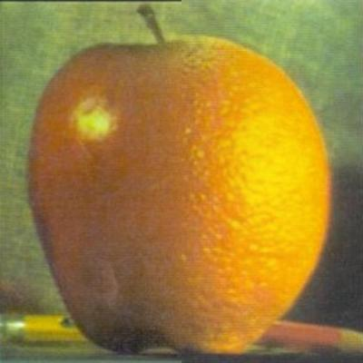
Overview
In this project, we explore image processing through frequency analysis. We implement edge detection using finite difference and Derivative of Gaussian filters, sharpen images with unsharp masking, and create hybrid images that appear differently at close and far viewing distances. We then build Gaussian and Laplacian stacks to perform seamless multiresolution blending of images with irregular boundaries.
Finite Difference Operator
Let $I$ be the input image. The gradient magnitude edge image is computed by convolving $I$ with the humble finite difference filters $D_x = \begin{bmatrix} 1 & -1 \end{bmatrix}$ and $D_y = \begin{bmatrix} 1 \\ -1 \end{bmatrix}$, then consolidating the resulting vertical and horizontal edges via the gradient magnitude function $\sqrt{(\frac{\partial I}{\partial x})^2 + (\frac{\partial I}{\partial y})^2}$. Finally, we binarize this output by setting all pixels with intensity greater than the empirically determined threshold of $0.2$ to $1$ and all pixels less than or equal to this threshold to $0$. The result of this procedure on the cameraman image is shown below.

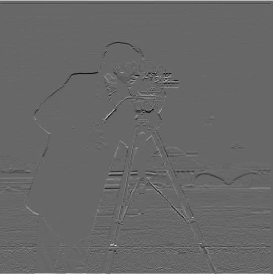
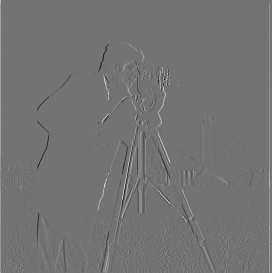
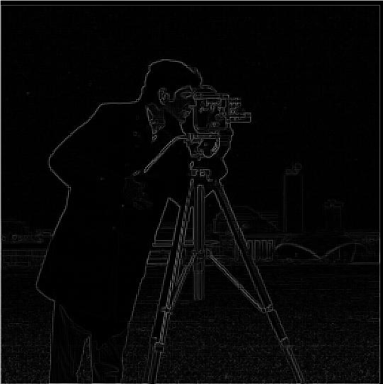
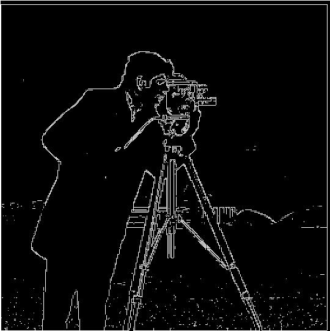
Derivative of Gaussian (DoG) Filter
The output image below is obtained by convolving the input image with a Gaussian filter $G$ to create a blurring effect, then passing the result into the gradient magnitude computation process described above, but with a lower binarization threshold of $0.1$. As expected, this yields an edge detector image with thicker edges and less high-frequency noise, which primarily manifests as scattered white dots.
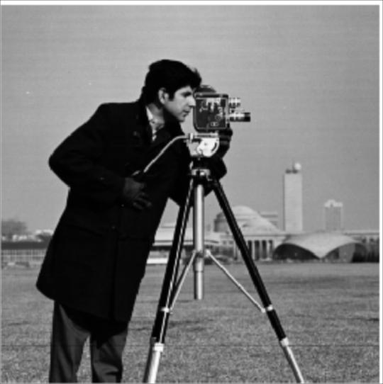
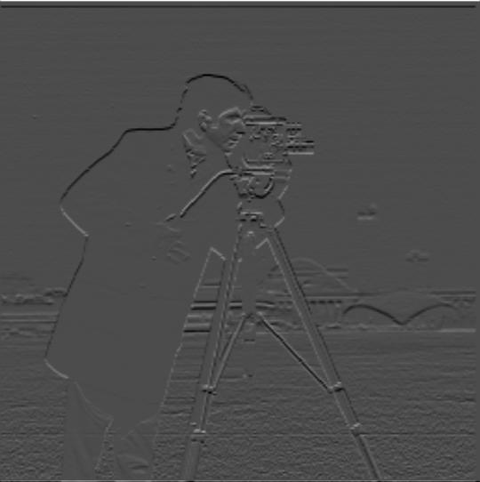
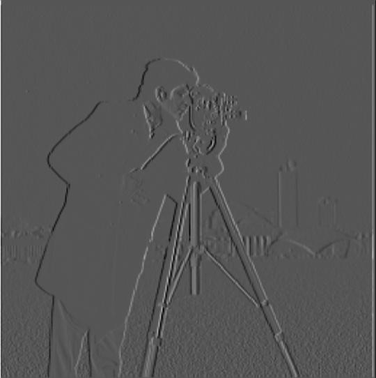
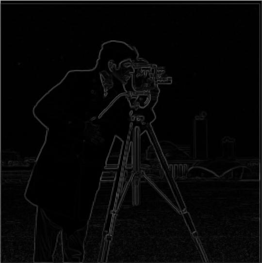

Note that the next output image looks exactly the same as the first, but is achieved through combining Derivative of Gaussian filters with respect to $x$ and $y$, which are simply convolutions of $G$ with $D_x$ and $D_y$, respectively. By leveraging the commutativity of the convolution operator, we can get the same result with much less computation. Below, we have the two DoG filters along with the identical output image.
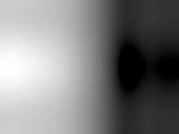
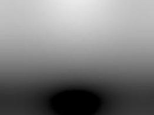
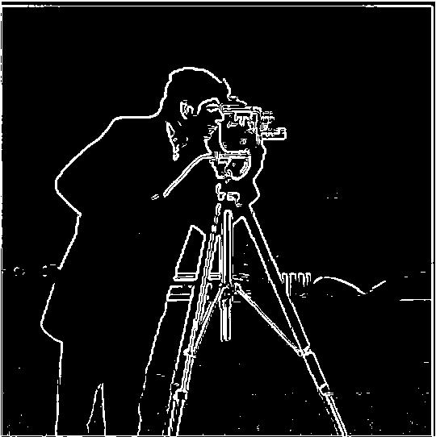
Image Sharpening
To sharpen an image, we first apply a Gaussian blur to the input to isolate the low frequencies. Then, we subtract these low frequencies from the input image, thereby extracting the high-frequency details. Finally, we add these details back to the original image with a multiplier of $\alpha$ to get a sharpened version of the image. These operations are displayed below as discrete steps, but are combined into a single convolution in my implementation.

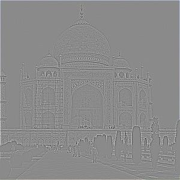
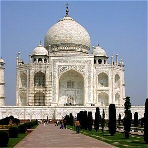
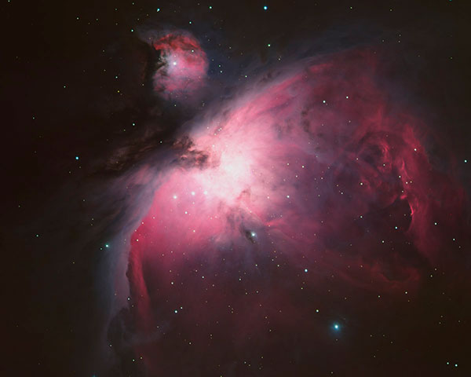
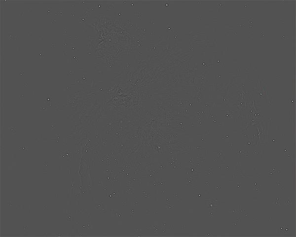
As a sanity check, we take an inherently sharp image, blur it, then sharpen it to see if the result looks reasonably close to the original. Though this is far from a perfect reconstruction, it appears that the sharpening process undid much of the blurring.
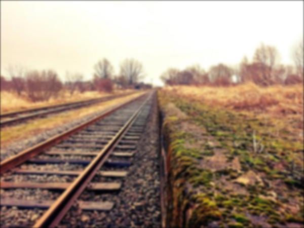
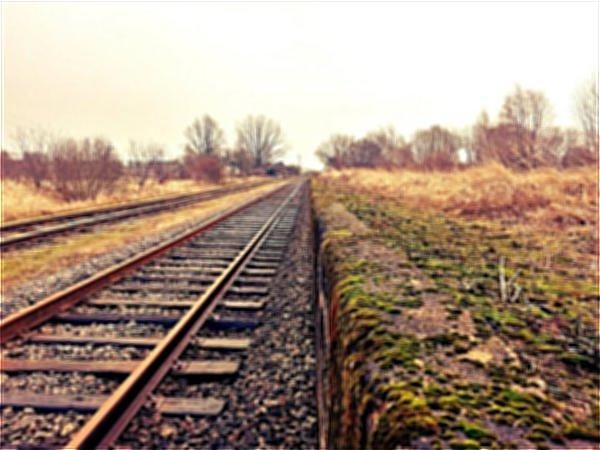
Hybrid Images
In order to create hybrid image, we take the high frequencies of one image and the low frequencies of another image, then overlay them. From close up, the image chosen as the high-frequency portion is clearly visible, but from far away, the high frequencies disappear and only the low frequencies are observable. As one can see, color often enhances hybrid images and is most prominent in the low-frequency component of the image.
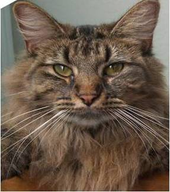
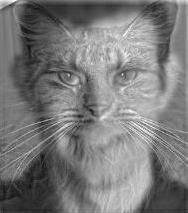
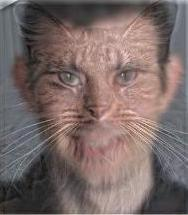
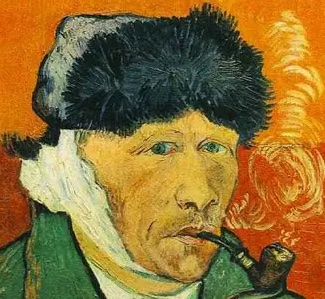
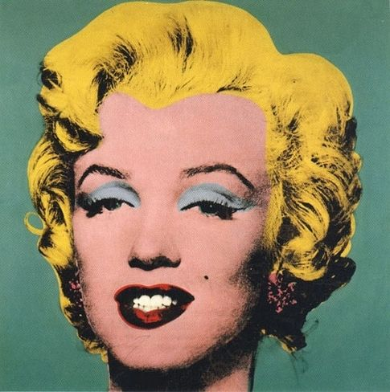
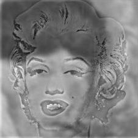
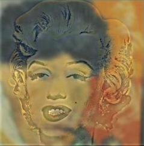
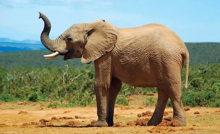
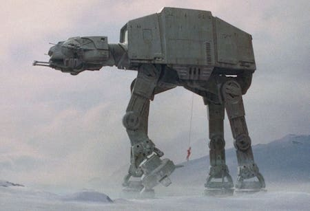
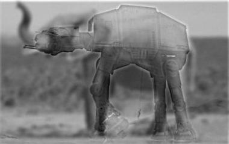
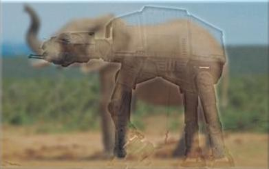
The following hybrid image between the Chicago bean and a monkey did not turn out well because the images are so different in shape and size, to the point where there do not exist any reasonable alignment points needed to create a convincing hybrid effect.
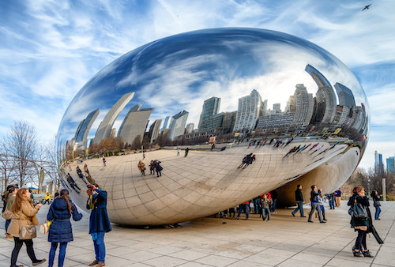
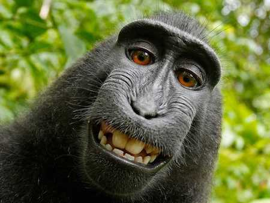
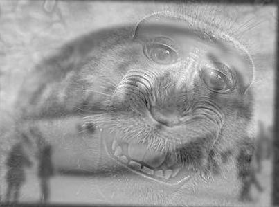
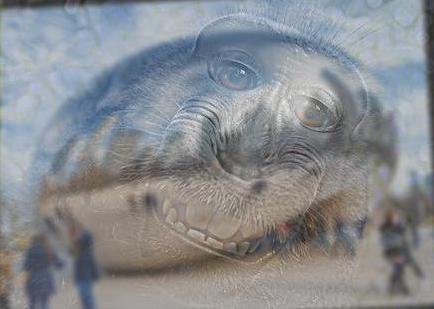
Spectral Analysis
Here, we show the Fourier transforms of the elephant, the ATAT, the filtered versions of these images, and the resulting hybrid image.
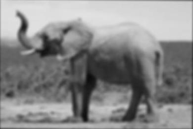
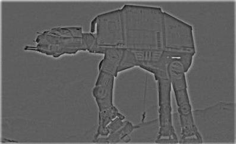
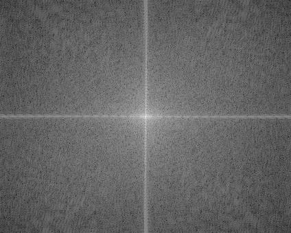
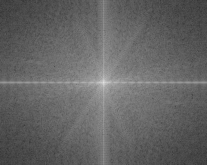
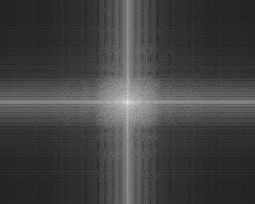
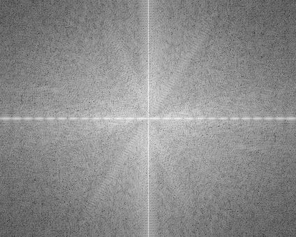
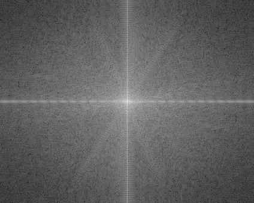
Gaussian and Laplacian Stacks
A Gaussian stack is constructed by successively applying a Gaussian blur to an input image. At each subsequent level of the stack, the Gaussian $\sigma$ increases, creating a coarser image of the same size. The Laplacian stack, on the other hand, is basically a representation of the frequency ranges between each level of the Gaussian stack. The levels of the Laplacian stack are computed by taking the difference between the current level of the Gaussian stack and the next level. Shown below is a visualization of selected levels of the Laplacian stack for the oraple image.
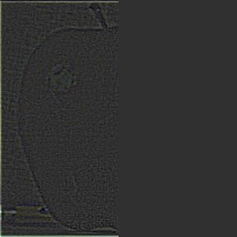
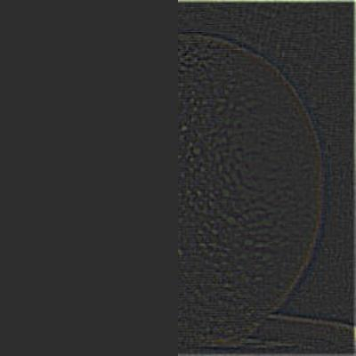
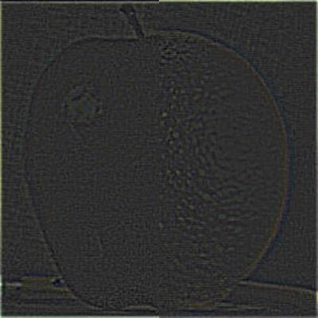
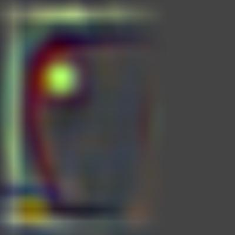
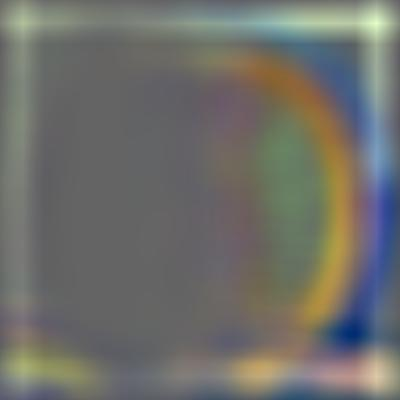
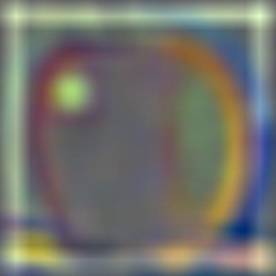
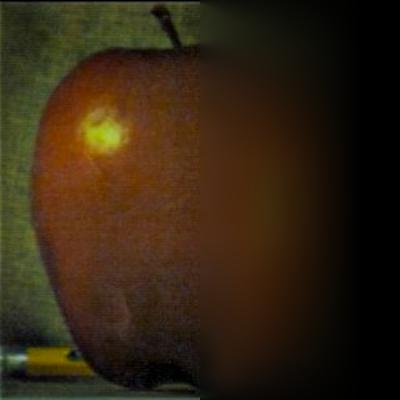
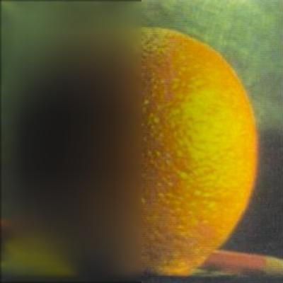
Multiresolution Blending
Multiresolution blending entails first computing the Laplacian stack of each input image, $LA$ and $LB$. Then, we construct a Gaussian stack $GR$ for the mask which will allow us to create a multigranular feathering effect for each frequency band selected from the image. To form a combined Laplacian stack $LS$ for the blended image, we utilize the levels of $GR$ as weights, applying the following formula: $$LS(i,j) = GR(i,j) \cdot LA(i,j) + (1-GR(i,j)) \cdot LB(i,j)$$ Finally, we collapse the $LS$ stack by taking a sum across all levels to obtain the blended image. I found that the most impressive results were obtained by using a more aggressive blurring schedule for the Gaussian stack of the mask compared to the Gaussian stacks of the input images, since this produced wider blending windows even for the high-frequency portions of the images. Below are the Laplacian stacks for my additional selected image blends.
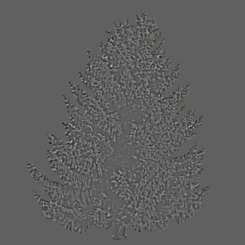
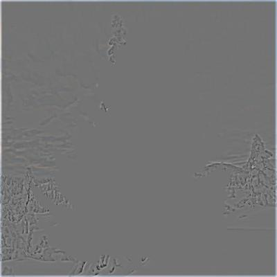
Results
Displayed here are the input images along with their respective blended results.